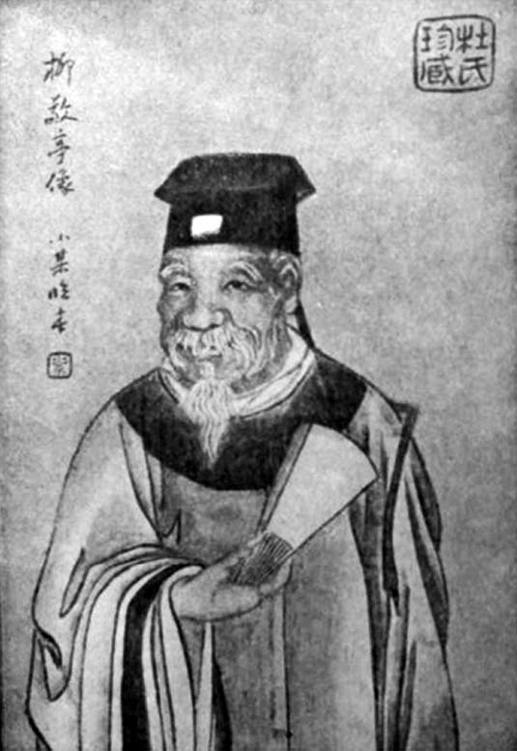
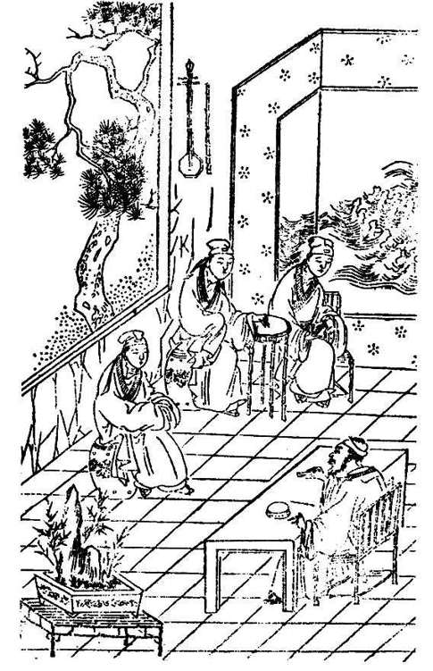

通过以上，我们试图发微他的内心。历来对这位大说书家，评价很热烈、推崇也够隆重，但他的内心没怎么得到过关注。我们重视一个人，喜欢从外在给他崇隆，对于内心却很少留意。
我的兴趣，是相反的。我把他列为考察的对象，不是为了表彰他，而是在他的故事和命运中，有些谜样的东西——他何以有那种生命轨迹，他和历史的关系……都欠缺合理的解释。所以，我一点一点探触他的内心，希望找到历史与这个人之间形成那种奇特交汇的原因。
为着甜头也罢，出于渴望也罢，置身南京的柳敬亭与之前最大不同，明显在于改换了生活和交往的圈子。之前的柳敬亭，是市井的；眼下，他周围“谈笑皆鸿儒，往来无白丁”。从前我们多听见文人走向民间、返璞归真的例子，柳敬亭的道路可以说与此正好相反，而他也确从中大大受益。假如他不来南京，抑或来了而仍只混迹“天桥”模式的市井场合，几百年后，我们是决计不能仰其大名的。
他的这类交往，起初没什么指向、立场，似乎凡是读书人，他都乐于结纳。这就不免陷于盲目。当时在他，可能以为肚里装着墨水儿的，都应尊敬，都有接近的必要。他如何知道，儒林内部却有着严重的“正邪”对立。对一位门外汉来说，这没有什么可以苛责的，但他那时确实险些因此误入了“歧途”——《桃花扇》中，他还未出场，陈贞慧、吴应箕见着侯朝宗，提议一道去听柳敬亭说书，侯朝宗怒道：
那柳麻子新做了阉儿阮胡子的门客，这样人说书，不听也罢了！[21]
“门客”之说不可能。一位江湖艺人没有做“门客”的资格，阮大铖废斥闲居亦无养“门客”之必要。但柳、阮曾经近迩之事却是真的，吴传称：“阮司马怀宁，生旧识也。”阮大铖既与何如宠同年避居南京，据此推知，柳敬亭名噪南都之初，在争相邀他至府的人中间，可以有阮大铖。阮大铖除和别人一样有文士身份，还是那时首屈一指的戏剧大师。他于表演的在行，一般知识分子无法相比。故而柳、阮之交，或许额外有一层技艺上切磋吸引的关系。但是，柳敬亭不知道，他无意中犯了艺术第一、政治第二的错误。
这就得讲讲那时南京的氛围了。崇祯年间的南京，是一座革命之都、启蒙之都。中国帝制历史的穷途末路，以及晚明万历以来黑暗历史所共同积累的苦闷，随着崇祯登基将阉党定为逆案，终以思想解放的方式爆发。而其激靡之地，不在沉重灰暗的北京，理所当然出现于经济、社会和思想都更多更早孕育了新意的南都金陵。恰与柳敬亭扬名南京同时，该城正在演为一个带革命与青春特色的新兴思想群体的大本营。这群体，便是东林的后进而较之更激进的复社。崇祯三年，复社同人以金陵为会师地，举行全国代表大会（“金陵大会”）。从此，它的许多骨干分子在此流连盘桓，过着精神和行为的双重浪荡生活，地点便是“旧院与贡院相对”的秦淮两岸。中国历史上这段特殊的秦淮风情，我们曾有专文楬橥，此处一笔带过。

柳敬亭像
晚清王小某临本，原藏福州杜氏，1928 年披露于《小说世界》第十七卷第三期。

《桃花扇》•听稗
见《桃花扇》第一出，侯方域与陈贞慧、吴应箕访柳敬亭，听他说书，柳为几个才子说了一段《论语》。
那些思想上的吸排，柳敬亭岂能省得？须知，他连粗通文墨也算不上。所以，刚刚接近文人圈的他，栽了不大不小的跟头。所幸他不乏黠智，仅凭察言观色也能分出好歹——这样说，是我们的推测，而根据是他后来一直紧紧追随东林、复社一派文人，不再与阮大铖那种人交往。至于他究竟怎样从阮大铖的朋友，变成了陌路人，这经过并无任何的资料。《桃花扇》中吴应箕说：“小生做了一篇留都防乱的揭帖，公讨其罪。那班门客才晓得他是崔魏逆党，不待曲终，拂衣散尽。”指柳与阮分道扬镳，是受崇祯十一年（1638）《留都防乱揭帖》事件的震动。这说法得不到实际史料的佐证，我们姑妄听之。
但孔尚任有此想象，亦非毫无根据。根据就是，柳敬亭确实跟《防乱揭帖》的主谋成了铁哥儿们，比如冒辟疆。冒乃反阮先锋，他在《防乱揭帖》之前两年，便为魏学濂两肋插刀，尽邀天启党祸死难遗属，举行向阮大铖示威的“桃叶渡大会”。柳敬亭与冒辟疆有一辈子的交情，晚年，冒还在赠诗中回忆彼此当年：
也是高阳一酒徒，嵚崎历落老黔奴。青灯白发江湖里，常梦当年旧狗屠。[22]
感慨着“如今衰白谁相问”，显然曾经有过许多难忘的经历。以冒辟疆反阮的坚定和激烈，柳敬亭若无同样态度，他们做不成朋友。
附带说一下，孔尚任没有写冒、柳之交，却安排柳敬亭、侯方域做了忘年交。实则他们关系究竟怎样，反而是不明的。那些与柳敬亭有所投赠的名士中间，我们恰恰不见侯方域的名字。侯方域亲自写的《李姬传》，也未提到柳敬亭。所以，《桃花扇》柳敬亭的这部分，以基于编剧之需的捏合成分居多，尤其所谓柳敬亭之识左良玉是出于侯方域引见，这个比较重大的情节与史不符。
不过在大背景上，柳敬亭与复社名士在秦淮河频繁过从、俯仰共游，绝非虚构。余怀的《板桥杂记》，两处提到他：“柳敬亭……常往来南曲”，南曲即曲中，或旧院；并形容他的表现：“酒酣以往，击节悲吟，倾靡四座”[23]，此与冒辟疆“高阳酒徒”之忆正相吻合。另一处，更具体些：
……柳敬亭说书，或集于二李家，或集于眉楼，每集必费百金。[24]
二李，与李香无涉，指旧院另两位名妓李大娘、李十娘。眉楼，便是顾媚的居处，顾后来嫁给龚鼎孳，称横波夫人。由此我们也知，日后龚、柳甚笃之交的起因，是在顾媚那里。